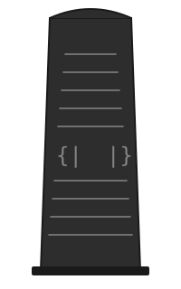

Introduction

Stele is an experimental programming language built on structural pattern matching.
It is built from first principles — parser generator, grammar, type system, and code generation — all without external parsing libraries. The primary compiler is self-hosted (written in Stele itself), with a Haskell bootstrap compiler used to seed the first build. Stele draws from pattern calculus and structural subtyping to create a language where pattern matching is the fundamental operation and all functions accept structural records.
Philosophy
Stele is designed around a few core ideas:
-
Records are the universal data structure. Every function takes a single record argument. There are no positional parameters, no tuples, no lists — just records with named fields.
-
Pattern matching is the only way to inspect values. There is no
if/else. Instead, you usecaseclauses to match on the shape and content of records. This is both the branching mechanism and the destructuring mechanism. -
Structural subtyping via row polymorphism. A function that needs fields
xandywill accept any record that has those fields, regardless of what other fields are present. Types are inferred, not declared. -
Compilation to C and native code. Stele compiles to readable, self-contained C99 or directly to AArch64 assembly (Apple Silicon). The generated code can be inspected, debugged, and compiled with any C compiler.
A Taste
fn factorial
case {| n: 0 |} => 1
case {| n |} => n * (factorial {| n: n - 1 |})
end
do main
print factorial {| n: 10 |}
end
Output:
3628800
A fn is a pure function defined by pattern matching. A do is an
effectful entry point. Functions are called by placing an argument after the
function name. print prints a value. {| ... |} are record literals — the
“pillars” that hold the language together.
What This Book Covers
This book is a complete guide to the Stele language. It covers:
- How to install the compiler and run your first program
- Every syntactic construct in the language
- The type system and how structural subtyping works
- Input and output: reading from stdin, writing files, command-line arguments
- Patterns and techniques for writing idiomatic Stele
- How the compilation pipeline works under the hood
- A complete reference for all keywords, operators, and built-in functions
Installation
Prerequisites
To use a pre-built Stele compiler binary, you need only:
- A C compiler — GCC or Clang. The generated code uses
__builtin_va_argfor variadic record construction, which both support.
To bootstrap the compiler from source, you also need:
- GHC 9.6 or later (the Glasgow Haskell Compiler)
- Cabal 3.10 or later (the Haskell build tool)
Installing GHC and Cabal
The recommended way to install GHC and Cabal is through GHCup:
curl --proto '=https' --tlsv1.2 -sSf https://get-ghcup.haskell.org | sh
Follow the prompts to install GHC and Cabal.
Using a Pre-Built Compiler
If you have a pre-built compiler binary, you can compile programs directly:
./compiler examples/hello.stele hello.c
cc -O1 -o hello hello.c
./hello
Bootstrapping from Source
Clone the repository and bootstrap:
git clone <repository-url>
cd stele
./bootstrap.sh 2
This uses the Haskell bootstrap compiler (in bootstrap/haskell/) to build
the self-hosted compiler through two generations and verify a fixed point.
The resulting compiler binary is the self-hosted compiler.
You can also bootstrap manually:
cd bootstrap/haskell
cabal build
cabal run stele -- ../../compiler.stele
cd ../..
cc -O1 -o compiler compiler.c
Compiling Programs
To compile a .stele source file to C:
./compiler examples/hello.stele hello.c
This produces hello.c. You can then compile and run it:
cc -O1 -o hello hello.c
./hello
Output:
25
3628800
Compile to Native Assembly
The self-hosted compiler can also emit native assembly:
# AArch64 (Apple Silicon / Linux ARM)
./compiler examples/hello.stele hello.s asm
cc -O1 -o hello hello.s runtime/runtime.c
# x86_64 (macOS / Linux)
./compiler examples/hello.stele hello.s x86
cc -O1 -o hello hello.s runtime/runtime.c
Hello, Stele
Let’s walk through a complete program to get a feel for the language.
Your First Program
Create a file called first.stele:
do main
print "Hello, world!"
end
Compile and run it:
./compiler first.stele first.c
cc -O1 -o first first.c && ./first
Output:
Hello, world!
A do is an effectful entry point — think of it as main in C. The body
contains statements that execute for side effects. print prints a value
followed by a newline. end closes the block.
Adding a Function
A fn is a pure function. Let’s add one:
fn square
case {| n |} => n * n
end
do main
print square {| n: 5 |}
end
Output:
25
The fn square takes a record with a field n and returns n * n. We call
it by passing a record literal {| n: 5 |}.
Named Record Types
You can declare named record types with struct:
struct Point
x : Int
y : Int
end
fn distance_sq
case {| a : Point, b : Point |} =>
let dx = a.x - b.x
let dy = a.y - b.y
dx * dx + dy * dy
end
do main
let origin = Point {| x: 0, y: 0 |}
let there = Point {| x: 3, y: 4 |}
print distance_sq {| a: origin, b: there |}
end
Output:
25
struct declares a record type. Construction uses the type name followed by a
record literal, as in Point {| x: 0, y: 0 |}. The fn distance_sq
pattern-matches its argument, extracting the a and b fields, each typed
as Point.
Recursion
Functions can call themselves:
fn factorial
case {| n: 0 |} => 1
case {| n |} => n * (factorial {| n: n - 1 |})
end
do main
print factorial {| n: 10 |}
end
Output:
3628800
The first case clause matches when n is literally 0. The second matches
any other n and recurses. This is how all branching works in Stele — there
is no if/else, only pattern matching.
Comments
Line comments start with --:
-- This is a comment
fn square
case {| n |} => n * n -- inline comment
end
What’s Next
The following chapters cover each language feature in depth, starting with the three kinds of declarations.
Declarations
A Stele program is a sequence of top-level declarations. There are exactly three kinds:
| Declaration | Purpose |
|---|---|
struct | Declare a named record type |
fn | Define a pure function by pattern matching |
do | Define an effectful entry point |
Every declaration is opened by its keyword and closed by end. There are
no imports, no modules, and no visibility modifiers — all declarations live in
a single flat global scope.
Declarations can appear in any order. Functions may reference other functions defined later in the file, enabling mutual recursion without forward declarations.
The following sections cover each declaration form in detail.
Structs
A struct declares a named record type.
Syntax
struct TypeName
field1 : Type
field2 : Type
...
end
Example
struct Point
x : Int
y : Int
end
struct Person
name : String
age : Int
end
Semantics
An struct gives a name to a specific set of typed fields. Once declared, you can:
- Use the type name in pattern annotations:
case {| p : Point |} => ... - Construct values of that type:
Point {| x: 3, y: 4 |}
Struct declarations are erased at runtime. They exist only to guide type checking. The fields you declare in a struct become the expected fields when you construct a value of that type.
Available Types
Field types in struct declarations can be:
| Type | Description |
|---|---|
Int | 64-bit signed integer |
String | Immutable string |
| StructName | A previously declared struct type |
Using Structs in Patterns
When a pattern annotates a field with an struct type, the type checker ensures the argument at that position has the required fields:
struct Pair
fst : Int
snd : Int
end
fn swap
case {| p : Pair |} => Pair {| fst: p.snd, snd: p.fst |}
end
Structs Are Optional
You do not need to declare an struct to use records. Anonymous record literals work everywhere:
fn add_xy
case {| x, y |} => x + y
end
do main
-- No struct needed
print add_xy {| x: 3, y: 4 |}
end
Structs are useful when you want to give a meaningful name to a recurring record shape, or when you want type annotations in patterns.
Functions
A fn is a pure function defined by one or more pattern-matching clauses.
Syntax
fn name
case pattern1 => body1
case pattern2 => body2
...
end
How Functions Work
Every fn:
- Takes a single argument (always a record)
- Tries each
caseclause in order from top to bottom - Returns the body of the first matching clause
If no clause matches, the program crashes at runtime (there is no exhaustiveness checking yet).
Single-Clause Functions
The simplest functions have one clause that binds the fields of the argument:
fn square
case {| n |} => n * n
end
fn greet
case {| name |} => "Hello"
end
Multi-Clause Functions
Multiple clauses enable dispatch based on the shape or content of the argument:
fn factorial
case {| n: 0 |} => 1
case {| n |} => n * (factorial {| n: n - 1 |})
end
The first clause matches when n is literally 0. The second matches any
other value of n. Clause order matters — the first match wins.
Let Bindings in Bodies
A clause body can contain let bindings before the final expression:
fn distance_sq
case {| a : Point, b : Point |} =>
let dx = a.x - b.x
let dy = a.y - b.y
dx * dx + dy * dy
end
Each let introduces a local variable visible to subsequent bindings and the
final expression.
Calling Other Functions
Functions call other functions by placing an argument after the function name:
fn hypotenuse_sq
case {| a : Point, b : Point |} =>
let dx = a.x - b.x
let dy = a.y - b.y
(square {| n: dx |}) + (square {| n: dy |})
end
Recursion
Functions can call themselves recursively:
fn fib_acc
case {| n: 0, a, b |} => a
case {| n, a, b |} =>
fib_acc {| n: n - 1, a: b, b: a + b |}
end
Mutual Recursion
Functions can call each other freely, regardless of declaration order:
fn is_even
case {| n: 0 |} => 1
case {| n |} => is_odd {| n: n - 1 |}
end
fn is_odd
case {| n: 0 |} => 0
case {| n |} => is_even {| n: n - 1 |}
end
Structural Subtyping
A fn’s pattern determines the minimum set of required fields. Any record with at least those fields will be accepted:
fn magnitude_sq
case {| x, y |} => x * x + y * y
end
do main
-- All of these work:
print magnitude_sq {| x: 3, y: 4 |}
print magnitude_sq {| x: 1, y: 2, z: 3 |}
print magnitude_sq {| x: 10, y: 10, extra: 999 |}
end
The extra fields z and extra are silently ignored. This is width subtyping
at work.
Do Blocks
A do is an effectful entry point — the equivalent of main in C.
Syntax
do name
statement1
statement2
...
end
The Main Do Block
Every executable Stele program must have a do main:
do main
print "Hello, world!"
end
This is where execution begins.
Statements
The body of a do is a sequence of statements. Statements execute in order for their side effects. The available statement forms are:
print — Print with Newline
print expr
Evaluates expr and prints the result to stdout, followed by a newline.
Integers print as decimal numbers. Strings print as their contents.
do main
print 42
print "hello"
end
Output:
42
hello
write — Print without Newline
write expr
Like print, but does not append a newline. Useful for building up output
piece by piece:
do main
write "Hello, "
write "world"
print "!"
end
Output:
Hello, world!
let — Bind a Variable
let name = expr
Evaluates expr and binds the result to name for use in subsequent
statements:
do main
let x = 5
let y = x * x
print y
end
Output:
25
Expression Statements
A bare expression can appear as a statement. Its result is discarded. This is useful for calling functions with side effects:
do main
inscribe {| path: "out.txt", content: "data" |}
print "Done."
end
Complete Example
do main
print "=== Stele IO demo ==="
print "What is your name?"
write "> "
let name = readln
write "Hello, "
write name
print "!"
print "Pick a number:"
write "> "
let n = readint
print "You chose:"
print n
end
Expressions
Expressions are the building blocks of computation in Stele. Everything that produces a value is an expression — arithmetic, record construction, function calls, pattern matching, and I/O reads.
This chapter covers each kind of expression. The subsections go into detail on:
- Literals and variables — integers, strings, and identifiers
- Records — the universal data structure
- Operators — arithmetic, comparison, and boolean
- Function calls and construction — calling functions and constructing typed records
- Let bindings — introducing local variables
- Field access — extracting values from records
Literals and Variables
Integer Literals
Integer literals are sequences of digits, representing 64-bit signed integers:
0
42
1000000
Negative integers are written with the unary minus operator:
-1
-42
String Literals
String literals are enclosed in double quotes:
"hello"
"Hello, world!"
""
String literals support the following escape sequences:
| Escape | Character |
|---|---|
\n | Newline |
\t | Tab |
\r | Carriage return |
\\ | Backslash |
\" | Double quote |
For example, "line1\nline2" contains an actual newline between the two words.
Variables
A variable is an identifier that refers to a previously bound value. Identifiers start with a letter and continue with letters or digits:
x
name
result42
myPoint
Variables are introduced by:
- Pattern matching — field names in
caseclauses become variables - let bindings —
let x = exprintroducesx
Reserved Words
The following identifiers are keywords and cannot be used as variable names:
struct fn do case end
let in print
match readln readint write
Records
Records are the universal data structure in Stele. They are collections of named fields, each holding a value. Every function argument is a record. Every structured value is a record.
Record Literals
Record literals are written between “pillars” {| and |}:
{| x: 1, y: 2 |}
{| name: "Alice", age: 30 |}
{| n: 42 |}
{| |}
The last form, {| |}, is the empty record — used when a fn takes no
meaningful arguments.
Fields
Each field has a name and a value, separated by a colon:
{| fieldName: expression |}
Multiple fields are separated by commas:
{| x: 1, y: 2, z: 3 |}
Field values can be any expression, including nested records:
{| origin: {| x: 0, y: 0 |}, direction: {| x: 1, y: 0 |} |}
Records Are Structural
Records in Stele are structural, not nominal. Two records with the same fields and types are the same type, regardless of how they were created:
fn add_xy
case {| x, y |} => x + y
end
do main
-- All of these are acceptable arguments:
print add_xy {| x: 1, y: 2 |}
print add_xy {| x: 10, y: 20 |}
print add_xy {| x: 5, y: 5, z: 100 |}
end
Named Records
While anonymous records work everywhere, you can use struct to declare named
record types and construct them with the type name:
struct Point
x : Int
y : Int
end
do main
let p = Point {| x: 3, y: 4 |}
print p.x
end
See Function Calls and Construction for details.
Records at Runtime
At runtime, every record is a tagged value containing an array of
(name, value) pairs. Field access is by name lookup. This means records are
lightweight and flexible, but field access is linear in the number of fields.
Operators
Stele supports arithmetic, comparison, and boolean operators. All binary operators are infix and left-associative.
Arithmetic Operators
| Operator | Description | Example | Result |
|---|---|---|---|
+ | Addition | 3 + 4 | 7 |
- | Subtraction | 10 - 3 | 7 |
* | Multiplication | 5 * 6 | 30 |
/ | Integer division | 17 / 5 | 3 |
Division truncates toward zero. Both operands must be Int, and the result
is Int.
Unary Operators
| Operator | Description | Example | Result |
|---|---|---|---|
- | Negation | -5 | -5 |
Comparison Operators
| Operator | Description | Example | Result |
|---|---|---|---|
== | Equal | 3 == 3 | 1 |
!= | Not equal | 3 != 4 | 1 |
< | Less than | 3 < 4 | 1 |
> | Greater than | 4 > 3 | 1 |
<= | Less or equal | 3 <= 3 | 1 |
>= | Greater or equal | 4 >= 3 | 1 |
Comparison operators return Int values: 1 for true, 0 for false. Both
operands must be the same type.
Boolean Operators
| Operator | Description | Example | Result |
|---|---|---|---|
&& | Logical AND | 1 && 1 | 1 |
|| | Logical OR | 0 || 1 | 1 |
Boolean operators treat 0 as false and any non-zero integer as true. Both
operands must be Int.
Precedence
From highest to lowest precedence:
- Primary expressions (literals, variables, parenthesized expressions)
- Unary operators (
-) - Field access (
.field) - Multiplicative (
*,/) - Additive (
+,-) - Comparison (
==,!=,<,>,<=,>=) - Logical AND (
&&) - Logical OR (
||)
Use parentheses to override precedence:
(a + b) * c
Combining with Pattern Matching
Since comparisons return integers, they work naturally with match:
fn abs
case {| n |} =>
match n >= 0
case 1 => n
case 0 => 0 - n
end
end
This is the idiomatic way to write conditional logic in Stele.
Function Calls and Construction
Calling a Function
A function is called by placing an argument after the function name:
riteName argument
The argument is typically a record literal:
square {| n: 5 |}
distance {| a: p1, b: p2 |}
factorial {| n: 10 |}
The argument can also be a variable or parenthesized expression:
let args = {| n: 5 |}
square args
square (args)
Nested Calls
Function calls can be nested. The inner call must be wrapped in the record literal or parenthesized:
ackermann {|
m: m - 1,
n: ackermann {| m: m, n: n - 1 |}
|}
In Statements
In a do block, a function call can appear as a statement (result discarded) or
as part of a print/write:
do main
print factorial {| n: 10 |}
inscribe {| path: "out.txt", content: "hello" |}
end
Constructing Named Records
Construction uses the type name followed by a record literal:
TypeName {| field1: value1, field2: value2, ... |}
Example
struct Point
x : Int
y : Int
end
do main
let p = Point {| x: 3, y: 4 |}
print p.x
print p.y
end
When to Use Named Construction
Named construction is optional. You can use anonymous record literals anywhere a named type is expected. These two are equivalent:
let p = Point {| x: 3, y: 4 |}
let p = {| x: 3, y: 4 |}
Named construction is useful for documentation and clarity — it makes the intent explicit and ensures the fields match the struct declaration.
Let Bindings
let introduces a local variable by binding a name to an expression’s value.
In Function Bodies
Inside a case clause body, let bindings precede the final expression:
fn hypotenuse_sq
case {| a, b |} =>
let a_sq = a * a
let b_sq = b * b
a_sq + b_sq
end
Each let binding is visible to all subsequent bindings and to the final
return expression. The last expression in the body (without a let) is the
return value.
In Do Blocks
In a do block, let bindings introduce variables for subsequent statements:
do main
let x = 5
let y = x * 2
print y
end
Shadowing
A let binding can shadow a previous binding of the same name:
fn example
case {| n |} =>
let n = n + 1
let n = n * 2
n
end
Here, example {| n: 5 |} evaluates to 12: the original n (5) is
shadowed by n + 1 (6), which is shadowed by n * 2 (12).
let in Expressions
let bindings can appear anywhere a multi-line expression is expected,
including inside match bodies:
fn classify
case {| n |} =>
let positive = n > 0
match positive
case 1 =>
let doubled = n * 2
doubled
case 0 => 0
end
end
Field Access
The dot operator (.) extracts a field from a record.
Syntax
record.fieldName
Basic Usage
do main
let p = {| x: 3, y: 4 |}
print p.x
print p.y
end
Output:
3
4
In Function Bodies
Field access is commonly used after pattern matching to drill into nested records:
struct Point
x : Int
y : Int
end
fn distance_sq
case {| a : Point, b : Point |} =>
let dx = a.x - b.x
let dy = a.y - b.y
dx * dx + dy * dy
end
Chaining
Field access can be chained to access nested records:
do main
let line = {| start: {| x: 0, y: 0 |}, end: {| x: 3, y: 4 |} |}
print line.start.x
print line.end.y
end
Output:
0
4
Type Inference
The type checker infers the required field from the access. If you write
p.x, the type checker knows p must be a record with at least an x
field, using row polymorphism to allow extra fields.
Pattern Matching
Pattern matching is the fundamental operation in Stele. It is the only way to inspect values, the only way to branch, and the primary way to destructure records.
There are two places patterns appear:
caseclauses in functions — the function dispatches on its argumentmatchexpressions — inline pattern matching on any expression
In both cases, the structure is the same: a value is matched against a
sequence of case clauses, and the body of the first matching clause is
evaluated.
case pattern => body
If no pattern matches, the program crashes at runtime. There is no exhaustiveness checking — it is the programmer’s responsibility to ensure all cases are covered.
The following sections cover the pattern language and the match expression
in detail.
Patterns
A pattern describes the expected shape and content of a value. When a value is matched against a pattern, the match either succeeds (binding variables) or fails (moving to the next clause).
Variable Pattern
A bare identifier matches any value and binds it:
case x => ...
After matching, x holds the matched value.
Wildcard Pattern
An underscore matches any value without binding:
case _ => ...
Use _ when you need to accept a value but don’t need to refer to it.
Integer Literal Pattern
An integer literal matches only that exact integer:
case 0 => ...
case 42 => ...
String Literal Pattern
A string literal matches only that exact string:
case "hello" => ...
Record Pattern
Record patterns are the most important pattern form. They match records by field name and can nest other patterns inside:
Binding Fields
case {| x, y |} => x + y
This matches a record with at least fields x and y, binding both as
variables. Extra fields are ignored (width subtyping).
Matching Literal Fields
case {| n: 0 |} => ...
This matches a record whose n field is exactly 0.
Mixing Bindings and Literals
case {| x: 0, y |} => y
case {| x, y: 0 |} => x
case {| x, y |} => x + y
The first clause matches when x is 0. The second when y is 0. The
third is a catch-all.
Nested Patterns
Patterns can nest record patterns:
case {| a: {| x: 0, y: 0 |} |} => "origin"
case {| a: {| x, y |} |} => "elsewhere"
Empty Record Pattern
case {| |} => ...
Matches any record (since every record has at least zero fields).
Type-Annotated Fields
Fields can be annotated with struct types:
case {| p : Point |} => p.x + p.y
case {| a : Point, b : Point |} => ...
The annotation constrains the type but does not change the matching behavior. The field is still bound as a variable.
Pattern Matching Order
Clauses are tried top to bottom. The first match wins. Place more specific patterns before more general ones:
fn describe
case {| n: 0 |} => "zero"
case {| n: 1 |} => "one"
case {| n |} => "something else"
end
If you put the general pattern {| n |} first, the literal patterns would
never be reached.
Width Subtyping in Patterns
A key feature of Stele’s pattern matching is that record patterns only
specify the minimum required fields. A pattern {| x, y |} matches any
record with at least x and y, regardless of additional fields:
fn magnitude_sq
case {| x, y |} => x * x + y * y
end
do main
-- 2D point
print magnitude_sq {| x: 3, y: 4 |}
-- 3D point (z is ignored)
print magnitude_sq {| x: 1, y: 2, z: 3 |}
-- Record with extra metadata (extra is ignored)
print magnitude_sq {| x: 10, y: 10, extra: 999 |}
end
This is structural subtyping in action — the fn doesn’t care about fields it didn’t ask for.
Match
match is an inline pattern match expression. It evaluates a scrutinee
expression and matches the result against a series of case clauses, all
within a single expression context.
Syntax
match scrutinee
case pattern1 => body1
case pattern2 => body2
...
end
Why match?
Stele has no if/else. Instead, match fills that role and more. Since
comparison operators return integers (1 for true, 0 for false), you can
use match to branch on conditions:
fn abs
case {| n |} =>
match n >= 0
case 1 => n
case 0 => 0 - n
end
end
Matching on Records
match really shines when matching on record shapes:
fn fizzbuzz
case {| n |} =>
let by3 = n - (n / 3) * 3
let by5 = n - (n / 5) * 5
match {| a: by3, b: by5 |}
case {| a: 0, b: 0 |} => "fizzbuzz"
case {| a: 0 |} => "fizz"
case {| b: 0 |} => "buzz"
case {| a, b |} => ""
end
end
Here, match matches a record with fields a and b, dispatching on
whether they are zero. This is more expressive than a chain of if/else
statements — it matches on the structure of data.
Matching on Integers
When the scrutinee is a simple integer expression, match acts like a
switch statement:
fn collatz_step
case {| n |} =>
match is_even {| n: n |}
case 1 => n / 2
case 0 => n * 3 + 1
end
end
Nesting match
match expressions can be nested:
fn classify
case {| x, y |} =>
match x == 0
case 1 =>
match y == 0
case 1 => "origin"
case 0 => "y-axis"
end
case 0 =>
match y == 0
case 1 => "x-axis"
case 0 => "general"
end
end
end
However, matching on a record with multiple fields (as in the fizzbuzz example) is usually cleaner than nesting.
match vs. Multi-Clause Functions
Both match and multi-clause functions use case for pattern matching. The
difference is scope:
- Multi-clause functions match on the function’s argument at the top level
matchmatches on any expression, anywhere within an expression
Use multi-clause functions when the dispatch is the primary structure of the
function. Use match when you need to branch partway through a computation.
Sum Types
Stele supports sum types via the oneof declaration. A sum type defines a
closed set of variants, each of which may carry named fields (like a struct) or
be nullary (carrying no data).
Declaring a Sum Type
Use oneof ... end to declare a sum type:
oneof Color
Red
Green
Blue
end
oneof Shape
Circle {| radius: Int |}
Rectangle {| width: Int, height: Int |}
Point
end
Each variant is either:
- Nullary – just a name, like
RedorPoint. - With fields – a name followed by a record type, like
Circle {| radius: Int |}.
Constructing Values
Nullary variants are used directly as expressions:
let c = Red
Variants with fields are constructed by providing a record literal with the variant name:
let s = Circle {| radius: 5 |}
let r = Rectangle {| width: 10, height: 20 |}
Pattern Matching on Sum Types
Use pattern matching to branch on the variant of a sum type value. Variant patterns mirror construction syntax:
match shape
case Circle {| radius |} => radius * radius * 3
case Rectangle {| width, height |} => width * height
case Point => 0
end
Nullary variants match with just the variant name:
match color
case Red => "red"
case Green => "green"
case Blue => "blue"
end
You can also use inline match expressions on sum type values wherever an expression is expected:
let area = match shape
case Circle {| radius |} => radius * radius * 3
case Rectangle {| width, height |} => width * height
case Point => 0
end
Runtime Representation
At runtime, a sum type value is represented as a record with a __tag field
that identifies the variant. For a nullary variant like Red, the value is
simply {| __tag: "Red" |}. For a variant with fields like
Circle {| radius: 5 |}, the value is {| __tag: "Circle", radius: 5 |}.
This means sum type values are ordinary records under the hood, and the pattern
matching machinery inspects the __tag field to determine which branch to take.
Structural Subtyping
Structural subtyping is one of Stele’s defining features. It means that a
function accepting {| x, y |} will work with any record that has at least
those fields — regardless of what other fields are present.
The Core Idea
Consider this fn:
fn magnitude_sq
case {| x, y |} => x * x + y * y
end
The pattern {| x, y |} declares the minimum contract: the argument must
have fields x and y. But it says nothing about other fields. All of these
calls work:
magnitude_sq {| x: 3, y: 4 |}
magnitude_sq {| x: 1, y: 2, z: 3 |}
magnitude_sq {| x: 10, y: 10, name: "point", extra: 999 |}
The extra fields (z, name, extra) are silently ignored. This is
width subtyping — a wider record (more fields) is a subtype of a narrower
one (fewer fields).
Practical Benefits
Code Reuse
A fn that needs only x and y can operate on 2D points, 3D points,
game entities, UI elements — anything with those fields:
struct Vec2
x : Int
y : Int
end
struct Vec3
x : Int
y : Int
z : Int
end
fn magnitude_sq
case {| x, y |} => x * x + y * y
end
do main
let flat = Vec2 {| x: 3, y: 4 |}
let deep = Vec3 {| x: 1, y: 2, z: 3 |}
-- Both work with the same fn
print magnitude_sq flat
print magnitude_sq deep
end
Output:
25
5
Incremental Refinement
You can write functions at different levels of specificity:
-- Works with any record having x and y
fn magnitude_sq_2d
case {| x, y |} => x * x + y * y
end
-- Requires x, y, and z
fn magnitude_sq_3d
case {| x, y, z |} => x * x + y * y + z * z
end
A Vec3 record works with both. A Vec2 record works only with the 2D
version. The type system enforces this automatically.
How It Works: Row Polymorphism
Under the hood, structural subtyping is implemented via row polymorphism (specifically, Remy-style row types).
When the type checker sees case {| x, y |} => ..., it infers a type like:
{| x: Int, y: Int | r |} -> Int
The r is a row variable — it stands for “any additional fields.” When
you call this fn with {| x: 3, y: 4, z: 5 |}, the row variable r
unifies with {| z: Int |}. The required fields are checked; the rest flow
through r.
This is fully automatic. You never write row variables yourself — the type checker infers them.
Pattern Dispatch and Subtyping
Width subtyping interacts naturally with multi-clause pattern matching:
fn classify
case {| x: 0, y: 0 |} => 0 -- origin
case {| x: 0 |} => 1 -- on y-axis
case {| y: 0 |} => 2 -- on x-axis
case {| x, y |} => 3 -- general point
end
Each clause requires different fields. The most specific patterns (requiring
specific values) are tried first. The last clause is a catch-all that accepts
any record with x and y.
do main
print classify {| x: 0, y: 0 |} -- 0
print classify {| x: 0, y: 5 |} -- 1
print classify {| x: 7, y: 0 |} -- 2
print classify {| x: 3, y: 4 |} -- 3
end
Anonymous Records
You don’t need structs to benefit from structural subtyping. Anonymous records work just as well:
do main
print magnitude_sq {| x: 10, y: 10, extra: 999 |}
end
The extra field is accepted and ignored. No struct declaration needed.
The Type System
Stele uses type inference — you almost never write type annotations. The compiler figures out the types of all expressions automatically and reports errors when things don’t line up.
Primitive Types
| Type | Description | Examples |
|---|---|---|
Int | 64-bit signed integer | 0, 42, -5 |
String | Immutable string | "hello", "" |
Void | Unit type (no meaningful value) | Return type of inscribe |
Record Types
Records have types determined by their fields:
{| x: Int, y: Int |}
{| name: String, age: Int |}
{| |}
Open Record Types (Row Polymorphism)
The key insight of Stele’s type system is that record types can be open.
When a fn pattern-matches on {| x, y |}, the inferred type is:
{| x: Int, y: Int | r |}
The | r is a row variable representing “and possibly more fields.” This is
what enables structural subtyping — any record with at least x and y will
match, regardless of additional fields.
Row variables are never written by the programmer. They are inferred automatically.
Type Inference Rules
The type checker follows these rules:
| Expression | Inferred Type |
|---|---|
Integer literal (42) | Int |
String literal ("hi") | String |
| Variable | Type from environment |
a + b, a * b, etc. | Both operands Int, result Int |
a == b, a < b, etc. | Both operands same type, result Int |
a && b, a || b | Both operands Int, result Int |
| `{ | x: e1, y: e2 |
rec.field | Type of field in rec’s type |
f arg | Return type of f |
readln | String |
readint | Int |
How Inference Works
Stele uses Algorithm W — the classic Hindley-Milner type inference algorithm — extended with Remy-style row types for records.
The process:
-
Collect declarations. All structs, functions, and do blocks are registered in the type environment before any bodies are checked.
-
Infer each body. For each fn, the type checker walks the pattern and body, generating type constraints. For each record pattern, a fresh row variable is created to allow extra fields.
-
Unify constraints. When two types must be equal (e.g., both sides of
+must beInt), the unifier checks compatibility. For records, this uses Remy’s row unification: matching fields are unified pairwise, and remaining fields flow through the row variable. -
Report errors. If unification fails (e.g., adding a string to an integer), the type checker reports the mismatch.
Pragmatic Let-Polymorphism
Each function call creates fresh type variables for the callee. This means a fn can be called with structurally different arguments at different call sites:
fn get_x
case {| x |} => x
end
do main
-- Called with different record types at each site:
print get_x {| x: 42 |}
print get_x {| x: "hello" |}
end
This is a pragmatic form of let-polymorphism that avoids the complexity of a full polymorphic type system while providing useful flexibility.
Type Errors
The type checker catches errors like:
- Adding a string to an integer
- Accessing a field that doesn’t exist on a record
- Passing a record that’s missing required fields
fn needs_xyz
case {| x, y, z |} => x + y + z
end
do main
-- Type error: record is missing field z
print needs_xyz {| x: 1, y: 2 |}
end
No Explicit Type Annotations
Type annotations appear in only one place: struct field declarations.
struct Point
x : Int
y : Int
end
Everywhere else — fn bodies, do statements, let bindings — types are inferred. There is no syntax for writing type annotations on expressions or function signatures.
Input and Output
Stele provides built-in facilities for console I/O, file I/O, and command-line argument access.
Console Output
print — Print with Newline
print evaluates an expression and prints the result to stdout, followed by
a newline:
print "Hello, world!"
print 42
print factorial {| n: 5 |}
Integers print as decimal numbers. Strings print as their contents (no quotes).
write — Print without Newline
write prints without appending a newline:
write "Enter your name: "
write "> "
Use write to build up output incrementally or to print prompts:
do main
write "Hello, "
write "world"
print "!"
end
Output:
Hello, world!
Console Input
readln — Read a String
readln reads a line from stdin and returns it as a String. The trailing
newline is stripped:
do main
print "What is your name?"
write "> "
let name = readln
write "Hello, "
write name
print "!"
end
readint — Read an Integer
readint reads an integer from stdin:
do main
print "Pick a number:"
write "> "
let n = readint
print "You chose:"
print n
end
File I/O
inscribe — Write to a File
inscribe writes a string to a file, creating or overwriting it:
inscribe {| path: "output.txt", content: "Written by Stele!" |}
The argument is a record with fields path (the file path) and content
(the string to write).
unearth — Read from a File
unearth reads the entire contents of a file and returns it as a String:
let contents = unearth {| path: "input.txt" |}
print contents
The argument is a record with a single field path.
Command-Line Arguments
argc — Argument Count
argc returns the number of command-line arguments (including the program
name):
print argc {| |}
The argument is the empty record {| |}.
argv — Get Argument by Index
argv returns the nth command-line argument as a string:
print argv {| n: 0 |} -- program name
print argv {| n: 1 |} -- first argument
The argument is a record with field n (the zero-based index).
Complete I/O Example
do main
print "=== Stele IO demo ==="
-- Console I/O
print "What is your name?"
write "> "
let name = readln
write "Hello, "
write name
print "!"
print "Pick a number:"
write "> "
let n = readint
print "You chose:"
print n
-- Command-line arguments
print "Number of CLI args:"
print argc {| |}
print "Program name:"
print argv {| n: 0 |}
-- File I/O
inscribe {| path: "io_test.txt", content: "Written by Stele!" |}
print "Wrote io_test.txt"
let contents = unearth {| path: "io_test.txt" |}
print "Read back:"
print contents
end
Recursion
Since Stele has no loops, recursion is the only way to repeat computation. This chapter covers common recursion patterns.
Simple Recursion
The classic factorial:
fn factorial
case {| n: 0 |} => 1
case {| n |} => n * (factorial {| n: n - 1 |})
end
The first clause is the base case. The second recurses with n - 1. Pattern
matching on literals provides the termination condition.
Accumulator Pattern
Accumulator-passing style avoids deep call stacks by threading state through a parameter:
fn fib_acc
case {| n: 0, a, b |} => a
case {| n, a, b |} =>
fib_acc {| n: n - 1, a: b, b: a + b |}
end
fn fib
case {| n |} => fib_acc {| n: n, a: 0, b: 1 |}
end
The public-facing fib fn wraps the accumulator version with initial
values. Each recursive call is in tail position, making this efficient
in practice.
Here’s another example — summing from 1 to n:
fn sum_acc
case {| n: 0, acc |} => acc
case {| n, acc |} =>
sum_acc {| n: n - 1, acc: acc + n |}
end
Mutual Recursion
Functions can call each other, enabling mutual recursion. The classic example is Hofstadter’s Female and Male sequences:
-- F(0) = 1, M(0) = 0
-- F(n) = n - M(F(n-1))
-- M(n) = n - F(M(n-1))
fn female
case {| n: 0 |} => 1
case {| n |} =>
n - (male {|
n: female {| n: n - 1 |}
|})
end
fn male
case {| n: 0 |} => 0
case {| n |} =>
n - (female {|
n: male {| n: n - 1 |}
|})
end
Declaration order doesn’t matter — female can reference male even though
male is defined later. All functions are visible to each other.
Recursion with match
Combining recursion with match for conditional logic:
fn collatz_count
case {| n: 1, steps |} => steps
case {| n, steps |} =>
match is_even {| n: n |}
case 1 =>
collatz_count {| n: n / 2, steps: steps + 1 |}
case 0 =>
collatz_count {| n: n * 3 + 1, steps: steps + 1 |}
end
end
This counts the number of steps for a Collatz sequence to reach 1. The
match branches on whether n is even, then recurses with the appropriate
transformation.
The Euclidean Algorithm
GCD demonstrates recursion with structural dispatch:
fn gcd
case {| a, b: 0 |} => a
case {| a: 0, b |} => b
case {| a, b |} =>
match a > b
case 1 => gcd {| a: a - b, b: b |}
case 0 => gcd {| a: a, b: b - a |}
end
end
The first two clauses handle base cases via literal patterns. The third
clause uses match to choose which value to reduce.
The Ackermann Function
The Ackermann function is a classic stress test for recursion — it grows extremely fast:
fn ackermann
case {| m: 0, n |} => n + 1
case {| m, n: 0 |} =>
ackermann {| m: m - 1, n: 1 |}
case {| m, n |} =>
ackermann {|
m: m - 1,
n: ackermann {| m: m, n: n - 1 |}
|}
end
Three clauses, each matching a different combination of base cases and recursive cases. The nested call in the third clause demonstrates how Stele handles deeply recursive computations.
Even/Odd via Mutual Recursion
A simple but illustrative example:
fn is_even
case {| n: 0 |} => 1
case {| n |} => is_odd {| n: n - 1 |}
end
fn is_odd
case {| n: 0 |} => 0
case {| n |} => is_even {| n: n - 1 |}
end
is_even delegates to is_odd and vice versa, peeling off one from n
at each step until the base case is reached.
Tips
- Always have a base case. A literal pattern like
case {| n: 0 |}is the most common termination condition. - Use the accumulator pattern when you’re building up a result
incrementally. Thread an
accfield through the recursive calls. - Pattern order matters. Put base cases first, recursive cases second.
- Keep recursion depth reasonable. Stele compiles to C without tail-call optimization, so very deep recursion (millions of frames) will overflow the stack.
Worked Examples
This chapter walks through several complete programs that demonstrate how Stele’s features combine in practice.
FizzBuzz
The classic interview problem: for a number n, return “fizzbuzz” if divisible by both 3 and 5, “fizz” if only by 3, “buzz” if only by 5, or empty otherwise.
fn fizzbuzz
case {| n |} =>
let by3 = n - (n / 3) * 3
let by5 = n - (n / 5) * 5
match {| a: by3, b: by5 |}
case {| a: 0, b: 0 |} => "fizzbuzz"
case {| a: 0 |} => "fizz"
case {| b: 0 |} => "buzz"
case {| a, b |} => ""
end
end
do main
print fizzbuzz {| n: 3 |}
print fizzbuzz {| n: 5 |}
print fizzbuzz {| n: 15 |}
print fizzbuzz {| n: 7 |}
end
Output:
fizz
buzz
fizzbuzz
Key techniques:
- Since there’s no modulo operator, we compute the remainder manually:
n - (n / 3) * 3. - We pack both remainders into a record and use
matchto match on the combination of values — much cleaner than nested if/else. - Width subtyping means
case {| a: 0 |}matches a record with bothaandbfields, as long asais 0. Thebfield is simply ignored.
Geometry with Structural Subtyping
struct Vec2
x : Int
y : Int
end
struct Vec3
x : Int
y : Int
z : Int
end
fn magnitude_sq
case {| x, y |} => x * x + y * y
end
fn magnitude_sq_3d
case {| x, y, z |} => x * x + y * y + z * z
end
fn classify
case {| x: 0, y: 0 |} => 0
case {| x: 0 |} => 1
case {| y: 0 |} => 2
case {| x, y |} => 3
end
do main
let flat = Vec2 {| x: 3, y: 4 |}
let deep = Vec3 {| x: 1, y: 2, z: 3 |}
-- Width subtyping: Vec3 works with magnitude_sq
print magnitude_sq flat
print magnitude_sq deep
print magnitude_sq_3d deep
-- Pattern dispatch
print classify {| x: 0, y: 0 |}
print classify {| x: 0, y: 5 |}
print classify {| x: 7, y: 0 |}
print classify {| x: 3, y: 4 |}
-- Anonymous records work too
print magnitude_sq {| x: 10, y: 10, extra: 999 |}
end
Output:
25
5
14
0
1
2
3
200
Key techniques:
magnitude_sqaccepts bothVec2andVec3because it only needsxandy.classifyuses progressively broader patterns to dispatch on which fields are zero.- Anonymous records with extra fields work seamlessly.
A Number Theory Toolkit
fn is_even
case {| n |} =>
let half = n / 2
match half * 2 == n
case 1 => 1
case 0 => 0
end
end
fn gcd
case {| a, b: 0 |} => a
case {| a: 0, b |} => b
case {| a, b |} =>
match a > b
case 1 => gcd {| a: a - b, b: b |}
case 0 => gcd {| a: a, b: b - a |}
end
end
fn fib
case {| n |} => fib_acc {| n: n, a: 0, b: 1 |}
end
fn fib_acc
case {| n: 0, a, b |} => a
case {| n, a, b |} =>
fib_acc {| n: n - 1, a: b, b: a + b |}
end
fn collatz_count
case {| n: 1, steps |} => steps
case {| n, steps |} =>
match is_even {| n: n |}
case 1 =>
collatz_count {| n: n / 2, steps: steps + 1 |}
case 0 =>
collatz_count {| n: n * 3 + 1, steps: steps + 1 |}
end
end
do main
print gcd {| a: 252, b: 105 |}
print gcd {| a: 1071, b: 462 |}
print fib {| n: 20 |}
print collatz_count {| n: 27, steps: 0 |}
end
Output:
21
21
6765
111
Key techniques:
is_evenuses the multiply-and-compare trick since there’s no modulo.gcduses subtraction-based Euclidean algorithm withmatchfor branching.fibwraps an accumulator-passing helper for efficiency.collatz_countcombinesmatchwith recursion for conditional stepping.
Interactive Program
fn factorial
case {| n: 0 |} => 1
case {| n |} => n * (factorial {| n: n - 1 |})
end
do main
print "Enter a number to compute its factorial:"
write "> "
let n = readint
write "The factorial of "
write n
write " is "
print factorial {| n: n |}
end
Key techniques:
readintreads an integer from stdin.writebuilds up a line of output without newlines.printfinishes the line with a newline.
The Compilation Pipeline
Stele compiles source code to standalone executables through two backends: a portable C backend and a native AArch64 backend (Apple Silicon). Both share a common front end and intermediate representation.
Source (.stele) → PEG Parse → AST → Type Check → IR → Backend → cc → Binary
│
├─ C Backend → .c file
├─ AArch64 Backend → .s file + runtime
└─ x86_64 Backend → .s file + runtime
In the Haskell bootstrap compiler (under bootstrap/haskell/), each stage is
implemented as a separate module. The self-hosted compiler (compiler.stele)
implements the same pipeline in a single file.
Stage 1: PEG Parsing
Module: Stele.PEG
The parser is built entirely from first principles — no Megaparsec, no Happy, no Alex. It implements a Parsing Expression Grammar (PEG) engine with:
- Packrat memoization for O(n) parsing
- Furthest-position tracking for error reporting
- A combinator EDSL for defining grammars as Haskell values
Grammars are first-class values of type Map String PExpr, where each entry
maps a rule name to a parsing expression. The combinators include:
pLit— match a literal stringpSeq— sequencingpAlt— ordered choicepStar,pPlus— repetitionpRef— reference another rulepNot— negative lookahead
The parser produces a parse tree, which is then transformed into an AST.
Stage 2: AST Construction
Module: Stele.Grammar + Stele.AST
The grammar module defines the Stele grammar using the PEG combinator EDSL and provides functions to convert parse trees into typed AST nodes.
The AST types (defined in Stele.AST) include:
Program— a list of declarationsDecl— struct, fn, or doExpr— all expression forms (literals, records, function calls, match, etc.)Pattern— all pattern forms (variable, literal, record, wildcard)Stmt— do statements (print, write, let, expression)
Stage 3: Type Checking
Module: Stele.Types
The type checker implements Algorithm W extended with Remy-style row types. It works in two passes:
-
Registration pass: Collect all declarations into the type environment. Each fn gets a fresh type variable; each struct’s fields are recorded.
-
Checking pass: For each declaration body, walk the AST generating type constraints. Unify constraints as they arise using IORef-based mutable type variables.
Row unification follows Remy’s algorithm:
- When unifying two record types, extract matching fields and unify them pairwise
- Remaining fields flow through the row variable
- This enables width subtyping automatically
Type errors are reported with the expression that caused the mismatch.
Stage 4: Lowering to IR
Module: Stele.IR + Stele.Lower
The lowering pass transforms the typed AST into an explicit intermediate representation with basic blocks, named temporaries, and flat instructions. Pattern matching, match expressions, and let-in chains are all resolved at this stage so that backends are purely mechanical translations.
Key properties of the IR:
- Flat instructions — no nested expressions; every subexpression is
named as a
Var. - Explicit reference counting —
IRetainandIReleaseare first-class instructions. - Pattern matching decomposed into primitives —
ITagCheck,INullCheck,IIntEq,IStrEqplusTBranchterminators create explicit control flow. - No SSA phi nodes — join points (match results) use a pre-declared result variable written by whichever branch succeeds.
Stage 5: Code Generation
C Backend
Module: Stele.EmitC
The C backend translates the IR into a single, self-contained C99 source file
with an embedded runtime. Each IR instruction maps to one or two lines of C,
and basic blocks become labeled sections with goto. See the
C Code Generation chapter for details.
AArch64 Backend
Module: Stele.EmitAArch64
The AArch64 backend emits Apple Silicon assembly (.s files). All IR
variables are stored on the stack using a fixed-size frame per function.
The generated assembly links against a separate C runtime
(runtime/runtime.c) that provides the same value representation and
reference counting as the embedded C runtime.
Stage 6: Assembling and Linking
The Stele CLI invokes the system C compiler (cc) to compile the generated
output into a binary:
- C mode (default):
cc -o prog prog.c - Native mode (
--native):cc -o prog prog.s prog_rt.c
With --run, the resulting binary is executed immediately.
Module Summary
| Module | Role |
|---|---|
Stele.PEG | PEG parser generator — packrat parsing from scratch |
Stele.AST | Abstract syntax tree data types |
Stele.Grammar | Grammar definition + parse tree → AST |
Stele.Types | Type inference with row polymorphism |
Stele.IR | Intermediate representation (basic blocks + flat instructions) |
Stele.Lower | AST → IR lowering pass |
Stele.EmitC | C code generation from IR |
Stele.EmitAArch64 | AArch64 assembly generation from IR |
Stele.EmitX86_64 | x86_64 assembly generation from IR |
Stele.Runtime | C runtime source for the native backend |
C Code Generation
Stele compiles to readable, self-contained C. Understanding the generated code can help with debugging and with understanding the language’s runtime behavior.
Runtime Representation
All values are represented as tagged unions:
typedef enum { TAG_INT, TAG_STR, TAG_RECORD, TAG_VOID } Tag;
typedef struct Field {
const char* name;
struct Value* value;
} Field;
typedef struct Value {
Tag tag;
int refcount;
union {
int64_t int_val;
char* str_val;
struct {
int num_fields;
Field* fields;
} record;
};
} Value;
Every value — including plain integers — is a pointer to a Value on the
heap. This means all values are boxed.
Memory Model
The runtime uses reference counting. Every Value has a refcount field
that tracks how many references point to it. When the count drops to zero the
value is freed:
TAG_STR— thestr_valbuffer is freed, then theValue.TAG_RECORD— each field value is recursively released, the fields array is freed, then theValue.TAG_INT/TAG_VOID— theValueis freed directly.
Because Stele values are immutable and there are no closures or first-class functions, reference cycles are impossible and reference counting is a complete solution — no garbage collector is needed.
Ownership Convention
Every expression evaluates to an owned Value* (its reference count has
been incremented for the recipient). The recipient must call rc_release when
it is done with the value.
| Operation | Ownership |
|---|---|
make_int, make_str, make_void | Returns owned (refcount 1) |
make_record | Returns owned; adopts field values (does not retain them) |
record_field | Returns borrowed (no refcount change) |
| Variable access | Borrows from local, caller retains to own |
| Function call | Caller owns the argument; callee borrows it. Return value is owned. |
print / write | Borrow their argument (caller releases after) |
How Constructs Compile
Functions → C Functions
Each fn becomes a C function taking and returning Value*:
fn square
case {| n |} => n * n
end
Compiles to something like:
static Value* fn_square(Value* arg) {
Value* _f_n = record_field(arg, "n");
Value* stele_n = _f_n;
if (_f_n != NULL) {
rc_retain(stele_n);
Value* _t0 = stele_n; rc_retain(_t0);
Value* _t1 = stele_n; rc_retain(_t1);
Value* _t2 = make_int(_t0->int_val * _t1->int_val);
rc_release(_t0); rc_release(_t1);
rc_release(stele_n);
return _t2;
}
// ...pattern match failure...
}
Pattern Matching → if-chains
Multi-clause pattern matching compiles to cascading if-statements that check field values:
fn factorial
case {| n: 0 |} => 1
case {| n |} => n * (factorial {| n: n - 1 |})
end
Becomes cascading blocks, each extracting fields and checking conditions. On match, pattern-bound variables are retained, the body is evaluated, bindings are released, and the result is returned.
Record Literals → make_record
Record construction uses a variadic function:
make_record(2, "x", make_int(3), "y", make_int(4))
This allocates a Value with tag TAG_RECORD containing two fields. The
field values are adopted — make_record takes ownership without
incrementing their reference counts.
Field Access → record_field
Field access compiles to a linear scan that returns a borrowed pointer:
Value* record_field(Value* rec, const char* name) {
for (int i = 0; i < rec->record.num_fields; i++) {
if (strcmp(rec->record.fields[i].name, name) == 0)
return rec->record.fields[i].value;
}
return NULL;
}
The caller must rc_retain the result if it needs to outlive the record.
let … in → Flat Sequential Statements
Chains of let bindings are flattened into sequential C variable declarations.
The compiler collects consecutive let bindings and emits them without nesting,
then releases all bound variables in reverse declaration order after the body:
Value* stele_x = /* evaluated value for x */;
Value* stele_y = /* evaluated value for y */;
/* body code that may reference stele_x, stele_y */
/* body result is used directly */
rc_release(stele_y);
rc_release(stele_x);
This avoids O(N) nesting depth for N sequential bindings, keeping the generated
C flat regardless of how many let bindings appear in a row.
match → Local Variable + goto
match expressions compile to a local result variable and a label for early
exit, with each clause checking its pattern and jumping to the end on match.
The scrutinee is released at the label after the matching clause stores its
result.
print/write → Print Functions
print and write borrow their argument — the caller is responsible for
releasing it afterward.
// Generated for: print expr
Value* _t0 = /* evaluate expr */;
print(_t0);
rc_release(_t0);
Identifier Mangling
To avoid collisions with C keywords, Stele identifiers are prefixed with
stele_:
| Stele | C |
|---|---|
x | stele_x |
name | stele_name |
result | stele_result |
Generated temporaries use numbered prefixes like _t0, _t1, _scr0,
_dvn0, _done0, etc., ensuring uniqueness across the entire compilation
unit.
Compiler Extensions
The generated code uses __builtin_va_list / __builtin_va_start /
__builtin_va_arg for make_record’s variadic interface. These are supported
by both GCC and Clang. No statement expressions (({ ... })) are used.
The AArch64 Backend
In addition to C, Stele can compile directly to AArch64 (Apple Silicon)
assembly. The native backend (Stele.EmitAArch64) consumes the same IR as
the C backend but emits .s files linked against a separate C runtime.
Using the bootstrap compiler:
cd bootstrap/haskell
cabal run stele -- --native ../../examples/hello.stele
# => Writes examples/hello.s + examples/hello_rt.c, links to examples/hello
Or using the self-hosted compiler:
./compiler examples/hello.stele hello.s asm
cc -O1 -o hello hello.s runtime/runtime.c && ./hello
The strategy is straightforward: all IR variables are stored on the stack in
a fixed-size frame. String literals are collected into a .section __TEXT,__cstring data section. Function calls use the standard Apple AArch64
calling convention (x0 for first argument / return value, x29/x30 for frame
and link registers).
The self-hosting compiler in compiler.stele (at the repo root) also has its own
AArch64 backend and can emit assembly when invoked with the asm flag.
Inspecting Generated Code
To see the generated C without running it:
./compiler examples/hello.stele hello.c
cat hello.c
To see the generated assembly:
./compiler examples/hello.stele hello.s asm
cat hello.s
The output is intentionally readable. It’s a useful learning tool for understanding how high-level constructs map to low-level code.
The Self-Hosting Compiler
Stele is self-hosting: the file compiler.stele (at the repo root) is a
complete Stele compiler written in Stele itself. It implements the full
compilation pipeline — tokenizer, parser, C code emitter, and AArch64 native
code generator — and can compile itself.
Why Self-Hosting?
A self-hosting compiler is the ultimate test of a language’s expressiveness. If a language can implement its own compiler, it demonstrates that the language is powerful enough for real-world systems programming. For Stele, it also serves as:
- A stress test of every language feature: records, pattern matching, recursion, structural subtyping, and I/O all get a serious workout.
- A correctness proof via bootstrapping: when the compiler compiles itself and produces identical output across generations, we know it faithfully implements its own semantics.
- The largest Stele program, exercising the compiler at scale (~3000 lines).
Architecture at a Glance
The self-hosting compiler follows the same pipeline as the Haskell reference compiler, minus the type checker:
Source (.stele) → Tokenize → Parse → Emit C or AArch64 → Write File
The compiler reads a source file, tokenizes it, parses the token stream into
an AST, and generates either C code or AArch64 assembly depending on the mode.
It relies on a shared runtime.c (or runtime/runtime.c for native mode)
that provides the value representation, reference counting, and built-in
functions for file I/O and string manipulation.
The compiler selects its output mode via command-line arguments:
compiler source.stele output.c— emit C (default)compiler source.stele output.s asm— emit AArch64 assembly
The entire compiler is a single file organized into clear sections:
| Section | Purpose |
|---|---|
| Utility library | Character classification, string helpers, linked lists |
| Tokenizer | Lexical analysis into tokens |
| Parser | Recursive descent into AST nodes |
| C code emitter | AST to C translation |
| AArch64 code emitter | AST to native assembly translation |
| Driver | Main do selecting mode and tying it all together |
Each section is covered in detail in the following subchapters.
Data Structures and Utilities
Before the compiler can tokenize or parse anything, it needs basic data structures. Stele has no built-in lists, so the compiler builds them from records.
Linked Lists from Records
The compiler implements linked lists using tagged records:
fn nil
case {| |} => {| tag: "nil" |}
end
fn cons
case {| head, tail |} => {| tag: "cons", head: head, tail: tail |}
end
A list is either {| tag: "nil" |} or {| tag: "cons", head: x, tail: xs |}.
Pattern matching on the tag field distinguishes the two cases. This is a
classic encoding of algebraic data types using structural records.
List Operations
The compiler provides a small standard library of list operations:
| Function | Purpose |
|---|---|
is_nil | Returns 1 if the list is nil, 0 otherwise |
list_head | Returns the head element |
list_tail | Returns the tail |
list_len | Counts elements (via tail-recursive accumulator) |
list_reverse | Reverses a list (via tail-recursive accumulator) |
list_nth | Returns the element at index N |
All recursive list operations use accumulator-passing style for tail recursion:
fn list_reverse_acc
case {| list, acc |} =>
match is_nil {| list: list |}
case 1 => acc
case 0 =>
let h = list_head {| list: list |}
let t = list_tail {| list: list |}
list_reverse_acc {| list: t, acc: cons {| head: h, tail: acc |} |}
end
end
The Accumulate-Then-Reverse Pattern
Throughout the compiler, recursive parsers accumulate results by cons-ing
onto the front of a list (which is O(1)), building the list in reverse order.
When the recursion finishes, a final list_reverse call restores the correct
order. This pattern appears in the tokenizer, the parser, and the code emitter.
Character Classification
The compiler provides character classification functions for the tokenizer:
| Function | Purpose |
|---|---|
is_digit | ASCII digits 0–9 |
is_alpha | ASCII letters a–z, A–Z |
is_alnum | Alphanumeric characters |
is_ws | Whitespace (space, newline, CR, tab) |
These operate on integer character codes obtained via char_at — one of the
built-in string functions provided by the runtime.
String Helpers
Since Stele strings are immutable and there is no character type, string
manipulation uses the built-in functions strlen, char_at, substr, and
concat. The compiler adds convenience wrappers like:
str_eq— string equality viastrcmpstr_starts_with— prefix matching- A string builder pattern using
concataccumulation
Tokenizer
The tokenizer (lexer) converts a source string into a list of tokens. Each
token is a record with a type and a value:
{| type: "ident", value: "factorial" |}
{| type: "int", value: "42" |}
{| type: "+", value: "+" |}
Token Types
The tokenizer recognizes the following token types:
| Category | Types |
|---|---|
| Keywords | fn, do, struct, case, end, let, match, readln, readint, print, write, oneof |
| Identifiers | ident |
| Literals | int, str |
| Operators | +, -, *, /, %, ==, !=, <, >, <=, >=, &&, || |
| Delimiters | {|, |}, (, ), ., ,, :, =, => |
| Special | _ (wildcard), eof |
How It Works
The tokenizer operates on a source string and a position index. At each step,
it skips whitespace and -- comments, then dispatches based on the current
character:
-
Digits →
lex_number: Scan forward to find the end of the digit sequence, extract withsubstr. -
"→lex_string: Scan forward to the closing"(respecting backslash escapes), extract the contents (without quotes), and process escape sequences (\n,\t,\r,\\,\") into their actual characters. -
Letters or
_→lex_word: Scan to the end of the alphanumeric sequence. Check against the keyword list withis_keyword. If it matches, the token type is the keyword itself (e.g.,"fn"). A lone_becomes the wildcard token. Otherwise, it’s anident. -
Punctuation →
lex_punct: Check for two-character tokens first (==,=>,!=,<=,>=,{|,|},||,&&), then fall back to single-character tokens.
The Tokenization Loop
The main loop (tokenize_loop) is tail-recursive with an accumulator:
fn tokenize_loop
case {| src, pos, acc |} =>
-- skip whitespace and comments
-- if at end of string, reverse acc and append EOF
-- otherwise, lex next token, cons onto acc, recurse
end
Tokens accumulate in reverse order via cons and are reversed at the end.
The final token list always ends with an {| type: "eof", value: "" |} sentinel.
Whitespace and Comments
The skip_ws_cmt fn handles both whitespace and line comments recursively:
- Skip any whitespace characters
- If the next two characters are
--, skip to end of line - Repeat until neither whitespace nor comment is found
This means comments can appear anywhere whitespace is legal.
Parser
The parser transforms a list of tokens into an abstract syntax tree (AST). It is a recursive descent parser with precedence climbing for operators.
Token Stream Interface
The parser consumes tokens through three helper functions:
peek— look at the next token without consuming itadvance— consume the current token and return the restexpect— consume a token of a specific type, or abort with an error
Every parse fn takes a tokens parameter and returns a record containing the
parsed AST node and the remaining rest tokens.
AST Node Types
The parser produces tagged records as AST nodes. Each node has a tag field
that identifies its type.
Expressions
| Tag | Fields | Example |
|---|---|---|
int_lit | value | 42 |
str_lit | value | "hello" |
var | name | x |
binop | op, left, right | x + 1 |
unop | op, operand | -x |
field_access | obj, field | point.x |
record | fields | {| x: 1, y: 2 |} |
named_record | name, fields | Point {| x: 1 |} |
call | name, arg | factorial {| n: 5 |} |
let_in | name, value, body | let x = 1 (desugared) |
match | scrutinee, clauses | match expr case ... end |
readln | (none) | readln |
readint | (none) | readint |
Patterns
| Tag | Fields | Example |
|---|---|---|
pat_int | value | 0 |
pat_str | value | "hello" |
pat_var | name | n |
pat_wild | (none) | _ |
pat_rec | fields | {| x, y: 0 |} |
Declarations
| Tag | Fields | Example |
|---|---|---|
decl_fn | name, clauses | fn factorial case ... end |
decl_do | name, stmts | do main ... end |
decl_struct | name, fields | struct Point x: Int y: Int end |
Operator Precedence
The parser implements operator precedence via a chain of mutually recursive functions, from lowest to highest precedence:
| Level | Operators | Function |
|---|---|---|
| 1 (lowest) | || | parse_or_expr |
| 2 | && | parse_and_expr |
| 3 | == != < > <= >= | parse_cmp_expr |
| 4 | + - | parse_add_expr |
| 5 | * / % | parse_mul_expr |
| 6 | unary - | parse_unary_expr |
| 7 (highest) | . (field access) | parse_postfix_expr |
Each level parses its operand by calling the next higher level, then checks for
its operator in a tail-recursive loop. For example, parse_add_expr calls
parse_mul_expr for its left operand, then loops checking for + or -.
All binary operators are left-associative: a + b + c parses as
(a + b) + c.
Parsing Let Bindings
Sequential let bindings in a block are parsed into a list, then folded into
right-nested let_in AST nodes:
let x = 1 → {| tag: "let_in", name: "x", value: 1,
let y = x + 1 body: {| tag: "let_in", name: "y", value: ...,
x * y body: {| tag: "binop", ... |} |} |}
The parse_let_bindings fn collects bindings into a list, then
fold_let_bindings converts them into nested let_in nodes where the
innermost body is the final expression.
Parsing Function Calls
Function calls support three argument forms:
- Record literal:
f {| x: 1 |} - Parenthesized expression:
f (expr) - Variable:
f x
This flexibility lets the programmer choose the most readable form for each call site.
Code Generation
The code emitter translates AST nodes into C code. It generates
reference-counted Value* operations that work with the shared runtime.c.
The Emitter Pattern
Every emitter fn follows the same convention. It takes an AST node and a
counter (for generating unique variable names), and returns:
{| code: String, var: String, counter: Int |}
code— C statements that set up the computation (variable declarations, function calls, etc.)var— the name of the C variable holding the resultcounter— the updated counter for the next fresh variable
The counter is threaded through every emitter call: each fn receives the counter, may allocate fresh variables (incrementing it), and passes the updated counter to the next call. This ensures all generated variable names are globally unique.
Fresh Variables
The fresh_var fn generates unique C identifiers:
fresh_var {| prefix: "_t", counter: 0 |}
→ {| name: "_t0", counter: 1 |}
Generated names include _t0, _t1, … for temporaries, _scr0 for
scrutinees, _dvn0 for match results, and _done0 for goto labels.
Identifier Mangling
The c_name fn prefixes Stele identifiers with stele_ to avoid collisions
with C keywords. The special name arg (the fn parameter) is left unmangled
since it matches the generated C function signature.
Expression Emission
The central dispatcher emit_expr pattern-matches on the AST node’s tag
field and delegates to specialized emitters:
| AST Tag | Emitter | Generated C |
|---|---|---|
int_lit | emit_int_lit | make_int(42) |
str_lit | emit_str_lit | make_str("hello") |
var | emit_var | stele_x; rc_retain(stele_x) |
binop | emit_binop | Emit both sides, apply op, release operands |
unop | emit_unop | Emit operand, negate |
field_access | emit_field_access | record_field(obj, "name") + retain |
record | emit_record | make_record(n, "f1", v1, ...) |
call | emit_call_expr | fn_name(arg) |
let_in | emit_let_in | Flat sequential bindings (see below) |
match | emit_match | Cascading if-chains with goto |
Let Binding Chains
The emitter flattens chains of nested let_in nodes into sequential C
variable declarations. The collect_let_chain fn walks the nested structure
and extracts all bindings and the final body. Then emit_let_bindings_loop
emits each binding as a flat Value* declaration, and all bound variables are
released in reverse order after the body:
// let x = 1
// let y = x + 1
// x * y
Value* stele_x = make_int(1);
Value* stele_y = make_int(stele_x->int_val + make_int(1)->int_val);
/* ... body code ... */
rc_release(stele_y);
rc_release(stele_x);
This avoids nested { } blocks, keeping the generated C flat regardless of how
many sequential let bindings appear.
Record Emission
Records are emitted as variadic make_record calls. The emitter loops over the
field list, emitting each value expression and collecting the field names and
result variables into an argument string:
make_record(2, "x", _t0, "y", _t1)
make_record adopts the field values — it takes ownership without
incrementing their reference counts.
Pattern Matching
Pattern matching emission produces two things:
cond— a C condition expression (e.g.,_f_x != NULL && _f_x->int_val == 0)bindings— C variable declarations extracting matched values
Record Patterns
For each field in a record pattern, the emitter generates:
Value* _f_x = record_field(arg, "x");
Value* stele_x = _f_x;
The condition checks that _f_x != NULL (the field exists). For literal
sub-patterns, it additionally checks the value:
_f_n != NULL && _f_n->tag == TAG_INT && _f_n->int_val == 0
Match Expressions
match compiles to a local result variable, a scrutinee, and a series of
if-blocks with a shared goto label:
Value* _dvn0;
Value* _scr0 = /* scrutinee */;
/* clause 1: */ if (condition) { ... _dvn0 = result; goto _done0; }
/* clause 2: */ if (condition) { ... _dvn0 = result; goto _done0; }
fprintf(stderr, "Pattern match failure\n"); exit(1);
_done0:;
rc_release(_scr0);
Each clause retains pattern-bound variables on entry and releases them before
the goto.
Function Definitions
Each fn compiles to a static C function:
static Value* fn_factorial(Value* arg) {
/* clause 1 */
/* clause 2 */
fprintf(stderr, "Pattern match failure in fn 'factorial'\n");
exit(1);
}
Clauses are emitted as cascading if-blocks. On a successful match, the body is evaluated, pattern-bound variables are released, and the result is returned.
Built-in Functions
Certain functions (unearth, inscribe, concat, strlen, char_at,
substr, strcmp, int_to_str, char_of_int, argc, argv) are
implemented in runtime.c rather than generated. The emitter checks
is_builtin_fn and skips code generation for these — they are available as C
functions at link time.
Assembling the Output
The top-level emit_c fn assembles the complete C file by concatenating:
- The contents of
runtime.c(read viaunearth) - Forward declarations for all non-builtin functions
- Function definitions
- The
main()function (from thedo maindeclaration)
The AArch64 Code Generator
The self-hosting compiler also includes an AArch64 native code generator,
activated by passing asm as the third command-line argument:
compiler source.stele output.s asm
Emitter State
Where the C emitter threads a simple counter through each call, the AArch64
emitter threads a richer state record:
{| counter, slot_counter, slots, strs |}
counter— for generating fresh labelsslot_counter— tracks the next available stack slotslots— a linked list mapping variable names to stack slot numbersstrs— a linked list of string literals with deduplicated labels
Stack-based Variables
All variables live on the stack. The alloc_slot fn allocates a slot and
the lookup_slot fn finds one by name. Stack offsets are computed as
-(16 + (slot+1)*8) relative to the frame pointer (x29), with
emit_load_slot and emit_store_slot generating the appropriate ldur/stur
instructions (falling back to register-indirect addressing for large offsets).
Expression Emission
Each expression emitter follows the same convention as the C side — it takes
an AST node and state, and returns {| code, var, state |}. The code is
assembly text, var names the stack slot holding the result, and state
carries the updated counters, slots, and string table.
String Table
String literals and field names are collected into a deduplicated string
table during emission. The emit_string_table fn emits them as .asciz
directives in a .section __TEXT,__cstring data section at the end of the
file.
Mode Selection
The get_mode fn checks argv[3] for the string "asm". The main do
uses a match on the mode to select between emit_c and emit_asm.
Bootstrapping
A self-hosting compiler faces a chicken-and-egg problem: to compile itself, it needs a compiler. Bootstrapping is the process of resolving this by using an existing compiler to get things started.
The Bootstrap Chain
Stele’s bootstrap process uses the Haskell reference compiler as the seed:
Haskell compiler
|
compiler.stele ──────► gen0 binary
|
compiler.stele ──────► gen1.c ──► gen1 binary
|
compiler.stele ───────────────► gen2.c ──► gen2 binary
|
compiler.stele ─────────────────────────► gen3.c
- gen0: The Haskell compiler compiles
compiler.steleto C, which is compiled to a native binary. - gen1: The gen0 binary compiles
compiler.stele, producinggen1.c. - gen2: The gen1 binary compiles
compiler.stele, producinggen2.c. - gen3: And so on.
The Fixed Point
The key property is that gen1.c and gen2.c are identical. This means the compiler has reached a fixed point: it produces the same output regardless of which generation compiled it.
Why does gen0’s output differ? Because gen0 was compiled by the Haskell
compiler, which may generate slightly different C code (different variable
numbering, different formatting). But once the self-hosting compiler compiles
itself (gen1), its output is determined entirely by compiler.stele — and since
gen1 and gen2 are the same binary (they came from identical C), they produce
identical output.
This fixed-point property is a strong correctness argument: the compiler faithfully implements the language semantics that it itself is written in.
Running the Bootstrap Test
The bootstrap.sh script automates the full bootstrap chain. It supports two
modes: C (default) and ASM (AArch64 native).
./bootstrap.sh 3 # C mode (default)
./bootstrap.sh 3 asm # AArch64 native mode
This compiles through three generations and verifies:
- Each generation compiles successfully
- gen1 through gen3 output files are all identical
- The final generation can compile
hello.steleand produce correct output
In C mode, gen0 is always built using the Haskell reference compiler. In ASM
mode, gen0 is still built via C (since the Haskell compiler is the seed), but
subsequent generations emit .s files and link against runtime/runtime.c.
A successful C-mode run looks like:
=== Stele Bootstrap Test ===
Generations: 3
Mode: c
[gen0] Compiling compiler.stele with Haskell compiler...
[gen0] OK
[gen1] Compiling compiler.stele with gen0...
[gen1] OK
[gen2] Compiling compiler.stele with gen1...
[gen2] OK
[gen3] Compiling compiler.stele with gen2...
[gen3] OK
=== Verifying Fixed Point ===
[gen1.c == gen2.c] OK
[gen1.c == gen3.c] OK
=== Smoke Test (gen3 compiles hello.stele) ===
Output matches expected: OK
=== BOOTSTRAP SUCCESS ===
The compiler reaches a fixed point at gen1.
All 3 generations produce identical c output.
What the Bootstrap Proves
The bootstrap test establishes several things:
- Completeness — the language is expressive enough to implement its own compiler.
- Correctness — the self-hosting compiler agrees with the reference compiler on the language’s semantics (both produce working compilers).
- Determinism — the compiler produces identical output when case identical input, regardless of which generation compiled it.
- Stability — changes to the compiler can be validated by re-running the bootstrap and checking that the fixed point is preserved.
Keyword Reference
All reserved keywords in Stele.
Declaration Keywords
| Keyword | Syntax | Description |
|---|---|---|
struct | struct Name ... end | Declare a named record type with typed fields |
fn | fn name case ... end | Define a pure function by pattern matching |
do | do name ... end | Define an effectful entry point |
end | (closing delimiter) | Close a struct, fn, do, or match block |
Pattern Matching Keywords
| Keyword | Syntax | Description |
|---|---|---|
case | case pattern => body | A pattern clause in a fn or match expression |
match | match expr case ... end | Inline pattern match expression |
Expression Keywords
| Keyword | Syntax | Description |
|---|---|---|
let | let name = expr | Bind a local variable |
in | (reserved) | Reserved for future use |
Function calls use postfix syntax: name arg (e.g., factorial {| n: 5 |}).
Named record construction uses the type name followed by a record literal:
TypeName {| ... |} (e.g., Point {| x: 3, y: 4 |}).
I/O Keywords
| Keyword | Syntax | Description |
|---|---|---|
print | print expr | Print a value to stdout with a newline |
write | write expr | Print a value to stdout without a newline |
readln | readln | Read a line from stdin as a String |
readint | readint | Read an integer from stdin |
Lexical Rules
- Identifiers start with a letter and continue with letters or digits
- Keywords take priority — you cannot use a keyword as a variable name
- Comments start with
--and extend to the end of the line - Strings are delimited by
"with standard escape sequences (\n,\t,\r,\\,\") - Integers are sequences of digits (
[0-9]+) - Records are delimited by
{|and|}
Operator Reference
Arithmetic Operators
All arithmetic operators require Int operands and produce Int results.
| Operator | Name | Associativity | Example |
|---|---|---|---|
+ | Addition | Left | 3 + 4 → 7 |
- | Subtraction | Left | 10 - 3 → 7 |
* | Multiplication | Left | 5 * 6 → 30 |
/ | Integer Division | Left | 17 / 5 → 3 |
Division truncates toward zero.
Unary Operators
| Operator | Name | Example |
|---|---|---|
- | Negation | -5 |
Comparison Operators
Comparison operators return Int: 1 for true, 0 for false.
| Operator | Name | Example |
|---|---|---|
== | Equal | 3 == 3 → 1 |
!= | Not equal | 3 != 4 → 1 |
< | Less than | 3 < 4 → 1 |
> | Greater than | 4 > 3 → 1 |
<= | Less or equal | 3 <= 3 → 1 |
>= | Greater or equal | 4 >= 3 → 1 |
Boolean Operators
Boolean operators treat 0 as false, non-zero as true. Both operands must
be Int.
| Operator | Name | Example |
|---|---|---|
&& | Logical AND | 1 && 1 → 1 |
|| | Logical OR | 0 || 1 → 1 |
Field Access Operator
| Operator | Name | Example |
|---|---|---|
. | Field access | point.x |
Field access can be chained: line.start.x.
Precedence Table
From highest to lowest:
| Level | Operators | Associativity |
|---|---|---|
| 1 | Literals, variables, (...) | — |
| 2 | - (unary) | Prefix |
| 3 | .field | Left |
| 4 | *, / | Left |
| 5 | +, - | Left |
| 6 | ==, !=, <, >, <=, >= | Non-associative |
| 7 | && | Left |
| 8 | || | Left |
Use parentheses to override precedence: (a + b) * c.
Built-in Functions
Stele provides several built-in functions for I/O and system interaction. These are implemented in the C runtime and available in every program.
Console I/O
readln
Read a line from standard input.
- Syntax:
readln(standalone expression) - Type:
String - Behavior: Reads characters until a newline, strips the newline, returns the result as a string.
let name = readln
readint
Read an integer from standard input.
- Syntax:
readint(standalone expression) - Type:
Int - Behavior: Reads an integer from stdin using
scanf.
let n = readint
File I/O
unearth
Read the contents of a file.
- Call:
unearth {| path: "filename.txt" |} - Argument:
{| path: String |} - Returns:
String - Behavior: Reads the entire file contents into a string.
let contents = unearth {| path: "data.txt" |}
print contents
inscribe
Write a string to a file.
- Call:
inscribe {| path: "filename.txt", content: "data" |} - Argument:
{| path: String, content: String |} - Returns:
Void - Behavior: Creates or overwrites the file with the case content.
inscribe {| path: "output.txt", content: "Hello from Stele!" |}
Command-Line Arguments
argc
Get the number of command-line arguments.
- Call:
argc {| |} - Argument:
{| |}(empty record) - Returns:
Int - Behavior: Returns the argument count, including the program name.
let count = argc {| |}
print count
argv
Get a command-line argument by index.
- Call:
argv {| n: index |} - Argument:
{| n: Int |} - Returns:
String - Behavior: Returns the nth argument. Index 0 is the program name.
let program = argv {| n: 0 |}
let first_arg = argv {| n: 1 |}
Process Control
sh
Run a shell command.
- Call:
sh {| command: "echo hello" |} - Argument:
{| command: String |} - Returns:
Int - Behavior: Executes the command via the host shell and returns the process status code.
terminate
Exit the current process immediately.
- Call:
terminate {| code: 1 |} - Argument:
{| code: Int |} - Returns:
Void - Behavior: Terminates the process with the provided exit code.
spawn
Run a shell command in a child process and return its PID.
- Call:
spawn {| command: "sleep 1" |} - Argument:
{| command: String |} - Returns:
Int - Behavior: Forks, executes the command via
/bin/sh -c ..., and returns the child PID to the caller.
await
Wait for a child process to exit.
- Call:
await {| pid: 12345 |} - Argument:
{| pid: Int |} - Returns:
Int - Behavior: Blocks until the child exits and returns its exit status.
sleep_ms
Sleep the current process for a number of milliseconds.
- Call:
sleep_ms {| ms: 250 |} - Argument:
{| ms: Int |} - Returns:
Void - Behavior: Sleeps for the requested duration (negative values are treated
as
0).
Summary Table
| Function | Argument | Returns | Description |
|---|---|---|---|
readln | (none) | String | Read line from stdin |
readint | (none) | Int | Read integer from stdin |
unearth | `{ | path: String | }` |
inscribe | `{ | path: String, content: String | }` |
argc | `{ | }` | |
argv | `{ | n: Int | }` |
sh | `{ | command: String | }` |
terminate | `{ | code: Int | }` |
spawn | `{ | command: String | }` |
await | `{ | pid: Int | }` |
sleep_ms | `{ | ms: Int | }` |